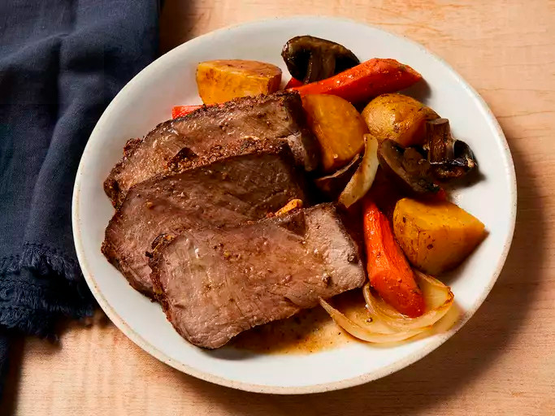

Top Sirloin Roast

Description
Be sure to use a good-quality top sirloin roast for the most tenderness and flavor. I love using the traditional potatoes and carrots but also like to add red pepper and mushrooms for more nutritional value.
Ingredients
- 1 (3 pound) beef top-sirloin roast
- 3 cloves garlic, slivered, or to taste
- 3 cloves garlic, minced
- 1 teaspoon ground paprika, or to taste
- 1 teaspoon salt, or to taste
- 1 teaspoon freshly ground black pepper, or to taste
- 6 Yukon Gold potatoes, quartered
- 5 carrots, cut into 2-inch pieces
- 2 large sweet onions, quartered
- 3 cubes beef bouillon
- 1/2 cup hot water
- 1 cup beef broth
- 1/2 cup beer
- 2 bay leaves, broken, or more to taste
- 2 large red bell peppers, cut into 2-inch pieces
- 1/2 cup mushrooms (optional)
Directions
- Make small slits in beef roast using a sharp knife; tuck slivered garlic into each slit. Rub minced garlic, paprika, salt, and ground black pepper over entire beef roast. Set aside until beef comes to room temperature, 15 to 30 minutes.
- Preheat the oven to 325 degrees F (165 degrees C).
- Arrange potatoes, carrots, and onions in an even layer in a 9x12-inch roasting pan. Dissolve beef bouillon cubes in hot water in a small bowl and pour over vegetables. Pour in beef broth and beer.
- Place beef roast on top of vegetables, making sure it is not submerged in broth mixture. Place bay leaf pieces around beef roast.
- Bake beef roast in the preheated oven until internal temperature reaches 150 degrees F (66 degrees C) for medium, 45 to 60 minutes. Transfer beef roast to a platter; cover with aluminum foil and allow to rest until internal temperature reaches 155 degrees (68 degrees C), about 10 minutes
- Increase oven temperature to 425 degrees F (220 degrees C). Add red pepper and mushrooms to the roasting pan; bake in preheated oven until vegetables are tender and lightly browned, 15 to 20 minutes.
- Thinly slice beef roast crosswise. Serve with vegetables; spoon pan juices over each serving.